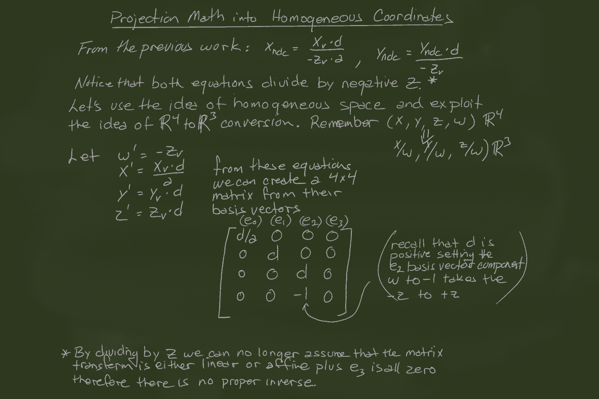

Assignment 3
Ok, given chalk talk below, can you you extract out the four planes of the frustum?
Alex sent me this link showing how this is done and it steals all my joy of watching you all suffer:
fast-extraction-viewing-frustum-planes-from-world-view-projection-matrix.pdf


